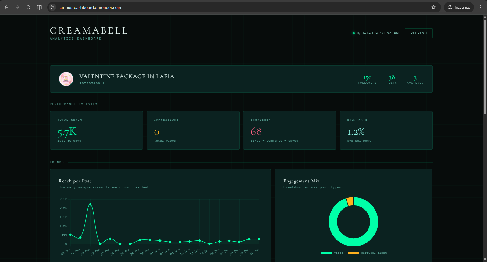
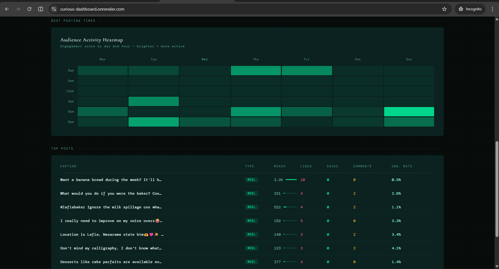

When I joined Ortho Technologies, social media performance was a feeling, not a number. The team was posting consistently, but nobody could tell you what was working, what wasn't, or what to do differently. There was no dashboard. No tracking. No baseline.
The information existed — Instagram and Facebook both surface analytics through their APIs — but nobody had pulled it into a place where the team could actually see it and act on it. I built something that did.
"The team was posting consistently, but nobody could tell you what was working, what wasn't, or what to do differently."
A real-time analytics dashboard tracking social performance across Instagram and Facebook. It monitors reach, impressions, engagement, and engagement rate per post — and surfaces them in a format the team can actually read without being analysts.
The dashboard includes a reach-per-post trend chart, an engagement mix breakdown by post type, an audience activity heatmap showing the best times to post by day and hour, and a top posts table ranked by engagement rate.


Before the dashboard, posting decisions were intuition-based. After it, the team had a reference point: which content types drove reach, when the audience was actually online, and which posts earned engagement versus which ones just got seen.
The heatmap alone changed the team's posting schedule. Visibility isn't a soft outcome — it's the difference between a decision made on a guess and a decision made on data.
This dashboard was built and deployed internally at Ortho Technologies as part of a broader operational overhaul. It was one of several tools I shipped during my time there — alongside a ClickUp data scraper, a birthday automation system, and a design standards library. The dashboard is no longer publicly accessible, but the screens above show it live in production.